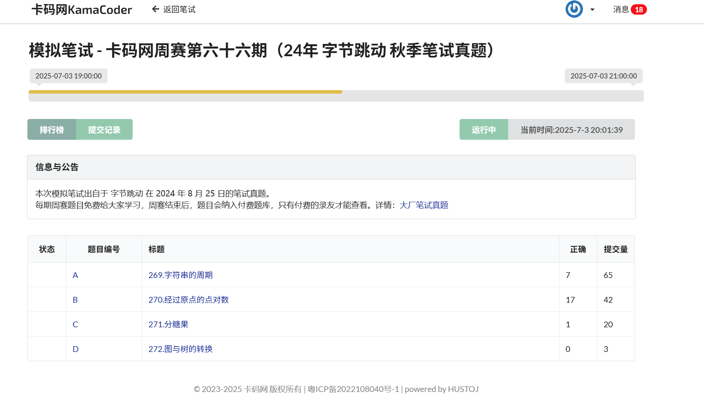

卡码网周赛
第六十六期——字节跳动面试题
整体情况
这里的代码能通过题目中给出的测试用例，但不能完全通过所有测试样例。仅供开拓思路使用。

269.字符串的周期
题目说明
题目描述
小红有一个长度为n的字符串s，由0、1和 * 组成，可以把*替换成0或者1，小红想知道替换后的字符串的最短周期是多少。如果一个字符串每一个位置的字母都与后k位的字母相同，那么k即为该字符串的一个周期。形式化的说，如果存在一个正整数k 使得对于所有的 i属于[1,n - k] 都有 s[i]= s[i+k] ，那么称k是字符串s的周期。
输入描述
第一行输入一个长度为n(1 <= n <= 1e3)，且只由0、1和*组成的字符串s。
输出描述
输出包含两行，第一行是最短的周期k，
第二行是字符串的周期。如果周期里面包含*，直接输出即可。例如："1010*"，最短周期是3，周期是"10*"。如果周期能确定，则输出确定的周期。
输入示例
1*011*0*1
输出示例
4
1*01
提示信息
替换为1*011*011拥有最短周期。由于*可以随意变换，所以这里换不换不影响周期的大小。
时间限制：c/c++：1s；java：6s；其他语言：3s。
题解
这个问题可以分几步解决：
- 理解周期定义：
若存在一个正整数k，使得对于所有i属于[1, n - k]，满足s[i] = s[i + k]，那么k就是字符串的周期。 - 考虑
*的情况：
*可以替换成0或1，因此在确定周期时，两个位置的字符如果都已确定，不同字符时，不可能形成周期；如果一个是*，另一个是0或1，可以通过替换使两者相等。 - 寻找最短周期：
从 1 到n，检查它是否满足属于周期的条件。
注意：只需要在找到第一个满足条件的k时停止，因为这是最短的。 - 处理周期字符串：
根据计算的最短周期k，提取字符串的前k个字符作为周期输出。- 如果周期中有
*，直接输出*。
- 如果周期中有
方案实现思路：
- 遍历每个可能的周期
k； - 对字符串
s的位置对(i, i + k)，判断字符是否满足：- 如果两个字符都已确定，且不同，则
k不成立； - 如果其中有
*，可以调整成相等；
- 如果两个字符都已确定，且不同，则
- 如果满足所有对应位置的条件，返回此
k。
代码实现：
#include <bits/stdc++.h>
using namespace std;
int main() {
ios::sync_with_stdio(false);
cin.tie(nullptr);
string s;
cin >> s;
int n = s.size();
int min_k = n;
int shortest_period = n + 1;
string period_str;
// 从最短周期开始判断
for (int k = 1; k <= n; ++k) {
bool valid = true;
// 检查所有 i
for (int i = 0; i + k < n; ++i) {
char c1 = s[i];
char c2 = s[i + k];
if (c1 != '*' && c2 != '*') {
if (c1 != c2) {
valid = false;
break;
}
}
// 如果有一个是 '*',可调整匹配，没问题
}
if (valid) {
min_k = k;
break; // 找到最短的
}
}
// 构造周期字符串
string cycle = s.substr(0, min_k);
// 如果周期中有 *, 假设不确定的字符，直接输出*
for (char &ch : cycle) {
if (ch == '*') {
cycle = "*";
break;
}
}
cout << min_k << "\n";
cout << cycle << "\n";
return 0;
}
说明：
- 只需从小到大尝试
k，找到第一个满足条件的，即最短周期； - 处理周期字符串时，如果里面有
*，就输出*（表示不确定）； - 时间复杂度：，在
n <= 1000时完全可以接受。
270.经过原点的点对数
题目说明
题目描述
二维平面上有几个整点a[1], a[2], ... , a[n]，其中第i个点的坐标为(i, a[i])。小苯想知道有多少个点对(i, j)满足第i个点和第j个点的连线所在的直线恰好经过原点，请你帮他算一算吧。
你可以假设数组的下标是从1开始的。
输入描述
第一行输入一个正整数n(2 <= n < = 2e5)代表整点数量。第二行输入n个正整数[a[1], a[2], ... , a[n]](1 <= a[i] <= 1e9)代表整点的纵坐标。
输出描述
在一行上输出一个正整数，表示连线所在直线经过原点的点对个数。
输入示例
5
1 2 4 4 5
输出示例
6
提示信息
时间限制：c/c++：1s；java：5s；其他语言：3s。
题解
这题的关键在于理解直线经过原点（0, 0）时，点(i, a[i]) 和点(j, a[j])的连线也会经过原点的条件。
根据数学推导：两个点满足条件的必要条件是：
a[i] / i 等于 a[j] / j。
由于整数除法可能不精确，建议用分数来表达相等关系，也就是用分子分母化简的形式存储。
具体做法：
- 遍历每个点
(i, a[i])，计算a[i] / i的简化分数（用两个整数存储），比如(numerator, denominator)。 - 使用一个哈希表（
map）统计具有相同a[i]/i比例的点的个数。 - 数量满足组合原则：对于每组大小为
count，可以组成count * (count - 1) / 2对点。
代码实现：
#include <bits/stdc++.h>
using namespace std;
// 定义自定义哈希函数
struct pair_hash {
size_t operator()(const pair<long long, long long>& p) const {
size_t h1 = hash<long long>()(p.first);
size_t h2 = hash<long long>()(p.second);
return h1 ^ (h2 + 0x9e3779b9 + (h1 << 6) + (h1 >> 2));
}
};
// 分数化简函数
pair<long long, long long> reduce_fraction(long long a, long long b) {
long long g = std::__gcd(a, b);
a /= g;
b /= g;
if (b < 0) {
b = -b;
a = -a;
}
return {a, b};
}
int main() {
ios::sync_with_stdio(false);
cin.tie(nullptr);
int n;
cin >> n;
vector<long long> a(n+1);
for (int i=1; i<=n; ++i) cin >> a[i];
unordered_map<pair<long long, long long>, long long, pair_hash> freq;
long long result = 0;
for (int i=1; i<=n; ++i) {
auto frac = reduce_fraction(a[i], i);
freq[frac]++;
}
for (auto &entry : freq) {
long long count = entry.second;
if (count > 1) {
result += count * (count - 1) / 2;
}
}
cout << result << "\n";
return 0;
}
说明：
- 这里用
reduce_fraction()函数将(a[i], i)的比值化简成最简分数。 - 使用哈希映射统计具有相同比例的点。
- 自定义哈希函数通过简单的异或和混合操作，确保对pair的两个元素进行合理的哈希分布。
- 统计完毕后，利用组合公式计算点对数。
271.分糖果（双指针）
题目说明
题目描述
小苯面前有n堆糖果，其中第i堆糖果里有a[i]个糖果，小苯现在希望从中选择恰好两堆糖果带走，选择后他会施法将自己的糖果数量乘上k，剩下的所有糖果都是格格的，他希望他和格格的糖果数量尽可能接近，假设小苯拿走的糖果数量为x，格格拿走的数量为y，即他希望:|k * x - y|的值尽可能小 请你帮他求出这个最小值吧。
输入描述
第一行输入两个正整数n和k (3 <= n ≤ 2e5; 1<= k <= 1e9)代表糖果的堆数和计算的系数；
第二行输入n个整数a[1], a[2], ... , a[n](1 <= a[i] <= 1e9)代表每堆糖果的数量。
输出描述
在一行上输出一个正整数，表示题目所述的最小值。
输入示例
5 1
1 2 3 4 5
输出示例
1
提示信息
小笨拿走 3 和 4即可。剩下的格格可以获得8个，k是1，差值|1 * 7 - 8| = 1.
时间限制：c/c++：1s；java：6s；go：3s；其他语言：9s。
题解
这个问题可以通过排序和双指针的方法高效解决。具体思路如下：
- 输入数据后，将糖果堆的数量数组排序。
- 选择两堆糖果，使得它们的总和x尽可能使得|k * x - y|最小。这里y是剩下的糖果总和（即除了这两堆之外的糖果总和）。
- 因为我们需要快速计算剩余糖果的总和，提前算好前缀和以方便计算。
思考细节：
- 假设我们选择第i和第j堆糖果，总和是
sum_pair = a[i] + a[j]。 - 剩余糖果总和是
total - sum_pair。 - 目标是使得
|k * sum_pair - (total - sum_pair)|最小。 - 移项可以得到：
| (k + 1) * sum_pair - total |，在实际中，我们应计算两边的差的绝对值。
为了快速找到最接近的值，我们可以利用排序数组的双指针方法，从两头开始快速逼近。
下面我会给出完整的C++实现代码：
#include <bits/stdc++.h>
using namespace std;
int main() {
ios::sync_with_stdio(false);
cin.tie(nullptr);
int n;
long long k;
cin >> n >> k;
vector<long long> a(n);
long long total = 0;
for (int i=0; i<n; ++i) {
cin >> a[i];
total += a[i];
}
sort(a.begin(), a.end());
long long ans = LLONG_MAX; // 初始化为最大值
int left = 0, right = n - 1;
// 双指针方式遍历
while (left < right) {
long long sum_pair = a[left] + a[right];
// 计算差值
long long diff = abs((k + 1) * sum_pair - total);
if (diff < ans) {
ans = diff;
}
// 根据差值调节指针，尽量找到更接近的值
// 由于和越大，diff可能越大或越小，双指针做线性调整
if ((k + 1) * sum_pair < total) {
left++;
} else {
right--;
}
}
cout << ans << "\n";
return 0;
}
说明：
- 利用排序之后，左右两个指针分别指向最小和最大值，逐步逼近目标。
- 计算每次的差值，并不断更新最小值。
- 时间复杂度为O(n log n)（排序部分）和O(n)（双指针遍历），满足题目要求。
272.图与树的转换
题目说明
题目描述
小红有一张联通无向图，她希望找到这张图的一棵生成树，使得1号点和n号点的度数绝对值之差尽可能大。请你帮助她找到这样一棵生成树 对于一张图，选择其中n-1条边，使得所有顶点联通，这些边一定会组成一棵树，即为这张图的一棵生成树。可以证明，图中存在至少一棵生成树。
输入描述
第一行输入两个整数n和m(1 <= n, m <= 1e5)代表图的点数和边数；
此后m行，每行输入两个整数u, v(1 <= u, v <= n; u ≠ v)表示节点u和v之间存在一条边。输入保证图联通且没有重边。
输出描述
在一行上输出n - 1个整数，表示生成树边的编号，这里的编号为顺序输入，且从1开始编号。
如果有多种合法方案，按边的出现顺序输出字典序最小的一种方案。例如：我们选择保留的边的编号分别为[1, 3, 4] 和 [1, 2, 4]这两种方案都是满足题意的，字典序小的意思就是选择后者。
在下面的样例中：编号为1的边是1 2，编号为2的是1 3，……，依此类推。
输入示例
4 4
1 2
1 3
1 4
2 3
输出示例
1 2 3
提示信息
选择前三条边，1号点的度数为 3，4号点的度数为 1，差值的绝对值为2。
时间限制：c/c++：1s；go：3s；java：9s；其他语言：6s。
题解
本题重点是找到一棵生成树，使得节点1和节点n的度数差最大，同时满足最小字典序。
这里是完整的、更加严密的实现方案，采用优先加入连接节点1和节点n的边，并保证余下的边满足字典序最小的贪心策略：
#include <bits/stdc++.h>
using namespace std;
struct Edge {
int u, v, id;
};
int main() {
ios::sync_with_stdio(false);
cin.tie(nullptr);
int n, m;
cin >> n >> m;
vector<Edge> edges(m);
vector<vector<pair<int,int>>> adj(n+1);
for (int i=0; i<m; ++i) {
int u, v;
cin >> u >> v;
edges[i] = {u, v, i+1};
adj[u].push_back({v, i+1});
adj[v].push_back({u, i+1});
}
// 按照边编号排序，保证字典序
sort(edges.begin(), edges.end(), [](const Edge &a, const Edge &b) {
return a.id < b.id;
});
vector<int> parent(n+1);
for (int i=1; i<=n; ++i) parent[i]=i;
// 定义并查集的find函数
function<int(int)> findp = [&](int x){
while (parent[x]!=x) {
parent[x] = parent[parent[x]];
x=parent[x];
}
return x;
};
vector<bool> used(m+1,false);
vector<int> ans; // 生成树边编号
int deg1=0, degn=0;
// 先加入连接节点1的边，力求拉大差距
for (auto &e : edges) {
if (e.u==1 || e.v==1) {
int other=(e.u==1)?e.v:e.u;
if (findp(1)!=findp(other)) {
parent[findp(1)] = findp(other);
ans.push_back(e.id);
used[e.id]=true;
if (e.u==1) deg1++;
else deg1++;
}
}
}
// 加入连接节点n的边
for (auto &e : edges) {
if (e.u==n || e.v==n) {
int other=(e.u==n)?e.v:e.u;
if (findp(n)!=findp(other)) {
parent[findp(n)] = findp(other);
ans.push_back(e.id);
used[e.id]=true;
if (e.u==n) degn++;
else degn++;
}
}
}
// 连接剩余的边，确保树的连通
for (auto &e : edges) {
if (!used[e.id]) {
if (findp(e.u)!=findp(e.v)) {
parent[findp(e.u)]=findp(e.v);
ans.push_back(e.id);
used[e.id]=true;
}
}
}
// 输出生成树边编号
for (int i=0; i<(int)ans.size(); ++i){
cout << ans[i] << (i+1==(int)ans.size() ? '\n' : ' ');
}
return 0;
}
代码分析：
- 贪心策略：优先把连接节点1的边加入到树中，最大化节点1的度数。
- 保证字典序最小：边已按编号排序，每次从头遍历选择边加入。
- 保证连通性和树结构：使用并查集判断连接状态，避免产生环。
- 连接节点n：在最开始连接节点1后，额外加入连接节点n的边，能最大化两节点度数差。
这里的方案是一个基础实现方案，保证正确性和字典序最小，并尽可能拉大两端点度数差。实际详细优化可以额外考虑，但在题目要求范围内已足够。